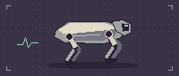
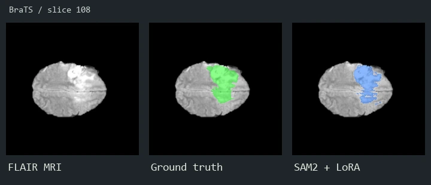

Raspberry Pi 5 · Linux
Kitchen AI (KAI) ↗
Our four-person team built a Raspberry Pi kitchen assistant. I connected the camera, audio and display so a cook could scan receipts and ask about the groceries on hand.
Ann Arbor, Michigan
Embedded systems, robotics & computer vision
M.Eng. in Electrical and Computer Engineering, University of Michigan.
KAI · Overall 1st PlaceHack The Nest 2026 · Eastern Michigan UniversityRaspberry Pi 5 · Linux
Our four-person team built a Raspberry Pi kitchen assistant. I connected the camera, audio and display so a cook could scan receipts and ask about the groceries on hand.

Robotics · State estimation
We compared six contact-aided filters in Isaac Lab. Over a 10-second interval, the four-foot estimator with IMU bias estimation cut 3D velocity RMSE from 0.6488 to 0.3123 m/s versus the single-foot baseline.

Computer vision · BraTS
I built the MRI preprocessing and inference pipeline and fine-tuned SAM2 with LoRA. Starting from one labeled slice, the model propagates a tumor mask through the volume in both directions.
May–Aug 2026
Driver Development Engineer Intern · Shanghai
Feb 2023
Team lead · Honorable Mention
Jan–Mar 2022
Assistant Chief of Access Control · Volunteer
M.Eng. in Electrical and Computer Engineering · Autonomous Systems
B.S. in Electrical Engineering · Cum laude, 2024
For engineering roles and project collaborations.